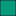

<!doctype html>
<html lang="en">
    <head>
        <meta charset="utf-8">
        <meta http-equiv="X-UA-Compatible" content="IE=edge">
        <meta name="viewport" content="initial-scale=1,user-scalable=no,maximum-scale=1,width=device-width">
        <meta name="mobile-web-app-capable" content="yes">
        <meta name="apple-mobile-web-app-capable" content="yes">
        <link rel="stylesheet" href="css/leaflet.css">
        <link rel="stylesheet" href="css/qgis2web.css"><link rel="stylesheet" href="css/fontawesome-all.min.css">
        <style>
        html, body, #map {
            width: 100%;
            height: 100%;
            padding: 0;
            margin: 0;
        }
        </style>
        <title></title>
    </head>
    <body>
	<div class="circle">
	<div id="logo">
	
	<!-- Modal box launch -->
	</div>
	</div>
        <div id="map">
        </div>
        <script src="js/qgis2web_expressions.js"></script>
        <script src="js/leaflet.js"></script>
        <script src="js/leaflet.rotatedMarker.js"></script>
        <script src="js/leaflet.pattern.js"></script>
        <script src="js/leaflet-hash.js"></script>
        <script src="js/Autolinker.min.js"></script>
        <script src="js/rbush.min.js"></script>
        <script src="js/labelgun.min.js"></script>
        <script src="js/labels.js"></script>
        <script src="data/Comuni_0.js"></script>
        <script>
        var map = L.map('map', {
            zoomControl:true, maxZoom:28, minZoom:1
        }).fitBounds([[41.37511542289625,13.75402763113052],[42.00228871537821,14.796791898666976]]);
        var hash = new L.Hash(map);
        map.attributionControl.addAttribution('<a href="https://github.com/tomchadwin/qgis2web" target="_blank">qgis2web</a>');
        var bounds_group = new L.featureGroup([]);
        function setBounds() {
            map.setMaxBounds(map.getBounds());
        }
		
		var basemap0 = L.tileLayer('http://{s}.tile.stamen.com/terrain/{z}/{x}/{y}.jpg', {
            attribution: 'Map tiles by <a href="https://stamen.com/">Stamen design</a>, <a href="http://creativecommons.org/licenses/by/3.0">CC BY 3.0</a> &mdash; Map data &copy; <a href="http://www.openstreetmap.org/copyright">OpenStreetMap</a>',
            maxZoom: 18
        });
basemap0.addTo(map);

		
        function pop_Comuni_0(feature, layer) {
            var popupContent = '<table>\
                    <tr>\
                        <td colspan="2"><strong>Comune</strong><br />' + (feature.properties['COMUNE'] !== null ? Autolinker.link(String(feature.properties['COMUNE'])) : '') + '</td>\
                    </tr>\
                    <tr>\
                        <td colspan="2"><strong>Programmazione</strong><br />' + (feature.properties['Prog'] !== null ? Autolinker.link(String(feature.properties['Prog'])) : '') + '</td>\
                    </tr>\
                </table>';
            layer.bindPopup(popupContent, {maxHeight: 400});
        }

        function style_Comuni_0_0(feature) {
            switch(String(feature.properties['Prog'])) {
                case 'Area Interna Mainarde':
                    return {
                pane: 'pane_Comuni_0',
                opacity: 1,
                color: 'rgba(35,35,35,1.0)',
                dashArray: '',
                lineCap: 'butt',
                lineJoin: 'miter',
                weight: 1.0, 
                fill: true,
                fillOpacity: 1,
                fillColor: 'rgba(7,155,125,1.0)',
            }
                    break;
                case 'Comuni in entrambe le aree di programmazione':
                    return {
                pane: 'pane_Comuni_0',
                opacity: 1,
                color: 'rgba(35,35,35,1.0)',
                dashArray: '',
                lineCap: 'butt',
                lineJoin: 'miter',
                weight: 1.0, 
                fill: true,
                fillOpacity: 1,
                fillColor: 'rgba(31,120,180,1.0)',
            }
                    break;
                case 'GAL Alto Molise':
                    return {
                pane: 'pane_Comuni_0',
                opacity: 1,
                color: 'rgba(35,35,35,1.0)',
                dashArray: '',
                lineCap: 'butt',
                lineJoin: 'miter',
                weight: 1.0, 
                fill: true,
                fillOpacity: 1,
                fillColor: 'rgba(255,127,0,1.0)',
            }
                    break;
            }
        }
        map.createPane('pane_Comuni_0');
        map.getPane('pane_Comuni_0').style.zIndex = 400;
        map.getPane('pane_Comuni_0').style['mix-blend-mode'] = 'normal';
        var layer_Comuni_0 = new L.geoJson(json_Comuni_0, {
            attribution: '<a href=""></a>',
            pane: 'pane_Comuni_0',
            onEachFeature: pop_Comuni_0,
            style: style_Comuni_0_0,
        });
        bounds_group.addLayer(layer_Comuni_0);
        map.addLayer(layer_Comuni_0);
        var baseMaps = {};
        L.control.layers(baseMaps,{'Comuni<br /><table><tr><td style="text-align: center;"></td><td>Area Interna Mainarde</td></tr><tr><td style="text-align: center;"></td><td>Comuni in entrambe le aree di programmazione</td></tr><tr><td style="text-align: center;"></td><td>GAL Alto Molise</td></tr></table>': layer_Comuni_0,},{collapsed:false}).addTo(map);
        setBounds();
        var i = 0;
        layer_Comuni_0.eachLayer(function(layer) {
            var context = {
                feature: layer.feature,
                variables: {}
            };
            layer.bindTooltip((layer.feature.properties['COMUNE'] !== null?String('<div style="color: #000000; font-size: 6pt; font-family: \'Arial\', sans-serif;">' + layer.feature.properties['COMUNE']) + '</div>':''), {permanent: true, offset: [-0, -16], className: 'css_Comuni_0'});
            labels.push(layer);
            totalMarkers += 1;
              layer.added = true;
              addLabel(layer, i);
              i++;
        });
        resetLabels([layer_Comuni_0]);
        map.on("zoomend", function(){
            resetLabels([layer_Comuni_0]);
        });
        map.on("layeradd", function(){
            resetLabels([layer_Comuni_0]);
        });
        map.on("layerremove", function(){
            resetLabels([layer_Comuni_0]);
        });
        </script>
    </body>
</html>
